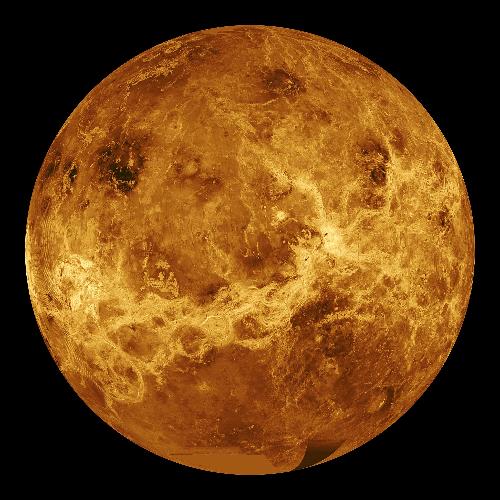
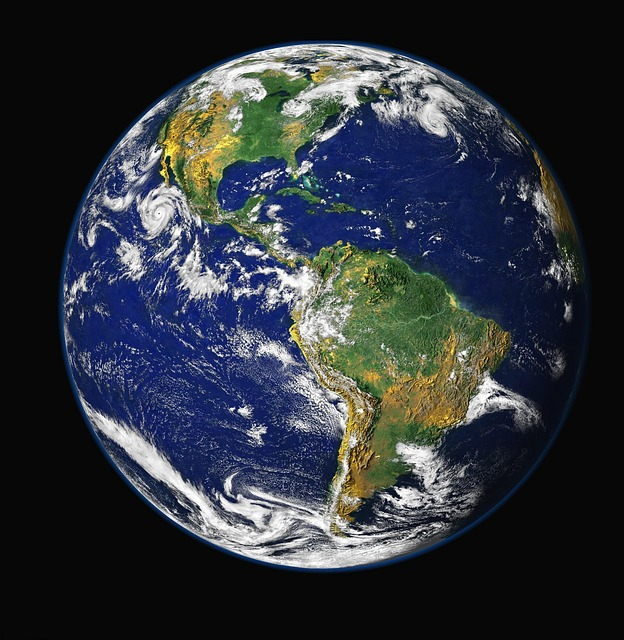
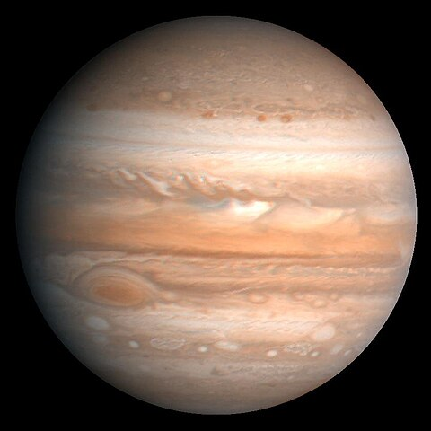

|
Venus |
Earth |
Mars |
Jupiter |
| Images |
 |
 |
 |
 |
| Fact #1 |
Second planet from the Sun |
Third planet from the Sun |
Fourth planet from the Sun |
Fifth planet from the Sun |
| Fact #2 |
Similar size to Earth |
Only planet known to support life |
Has the largest volcano in the solar system (Olympus Mons) |
Largest planet in the solar system |
| Fact #3 |
Thick atmosphere of carbon dioxide |
71% of its surface is covered by water |
Also known as the Red Planet due to iron oxide on its surface |
Composed mostly of hydrogen and helium |
| Fact #4 |
Surface temperature reaches up to 471°C (880°F) |
Has one moon (the Moon) |
Has two small moons: Phobos and Deimos |
Has over 75 moons, including Ganymede, the largest moon in the solar system |
| Fact #5 |
Day on Venus lasts longer than its year |
Orbits the Sun in 365.25 days |
Has seasons due to its tilted axis |
Has a Great Red Spot, a giant storm larger than Earth |
| Fact #6 |
Rotates in the opposite direction to most planets |
Has a strong magnetic field |
Atmosphere mostly carbon dioxide, thin compared to Earth |
One day on Jupiter lasts about 10 hours |
| Fact #7 |
No moons |
Has a breathable atmosphere for humans |
Explored by numerous rovers like Curiosity and Perseverance |
Has faint rings made of dust particles |